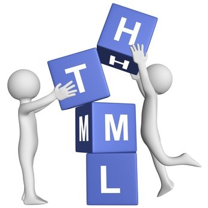

¿QUE ES HTML?

HTML:
HTML es un lenguaje de marcado que se utiliza para el desarrollo de páginas de Internet. Se trata de la sigla que corresponde a
HyperText Markup Language, es decir, Lenguaje de Marcas de Hipertexto, que podría ser traducido como Lenguaje de Formato de
Documentos para Hipertexto.
Se trata de un formato abierto que surgió a partir de las etiquetas SGML (Standard Generalized Markup Language). Concepto traducido generalmente como
«Estándar de Lenguaje de Marcado Generalizado» y que se entiende como un sistema que permite ordenar y etiquetar diversos documentos dentro de una lista.
Este lenguaje es el que se utiliza para especificar los nombres de las etiquetas que se utilizarán al ordenar, no existen reglas para dicha organización,
por eso se dice que es un sistema de formato abierto.
EL HTML se encarga de desarrollar una descripción sobre los contenidos que aparecen como textos y sobre su estructura, complementando dicho texto con
diversos objetos (como fotografías, animaciones, etc).
Es un lenguaje muy simple y general que sirve para definir otros lenguajes que tienen que ver con el formato de los documentos. El texto en él se crea
a partir de etiquetas, también llamadas tags, que permiten interconectar diversos conceptos y formatos.
Para la escritura de este lenguaje, se crean etiquetas que aparecen especificadas a través de corchetes o paréntesis angulares: "< . >"". Entre sus componentes,
los elementos dan forma a la estructura esencial del lenguaje, ya que tienen dos propiedades (el contenido en sí mismo y sus atributos).
Por otra parte, cabe destacar que el HTML permite ciertos códigos que se conocen como scripts, los cuales brindan instrucciones específicas a los navegadores
que se encargan de procesar el lenguaje. Entre los scripts que pueden agregarse, los más conocidos y utilizados son JavaScript y PHP.
El marcado estructural es el que estipula la finalidad del texto, aunque no define cómo se verá el elemento. El marcado presentacional, por su parte, es el que
se encarga de señalar cómo se verá el texto más allá de su función.
Para conocer el código HTML que utiliza una página web, hay que seleccionar Ver código fuente en nuestro navegador (como Internet Explorer o Mozilla Firefox).
Al elegir esta opción, se abrirá el editor de texto con el código HTML de la página que se está visualizando.
REFERENCIA BIBLIOGRAFICA
Julián Pérez Porto y Ana Gardey. Publicado: 2008. Actualizado: 2012. Definicion.de: Definición de html. Recuperado de:
https://definicion.de/html/